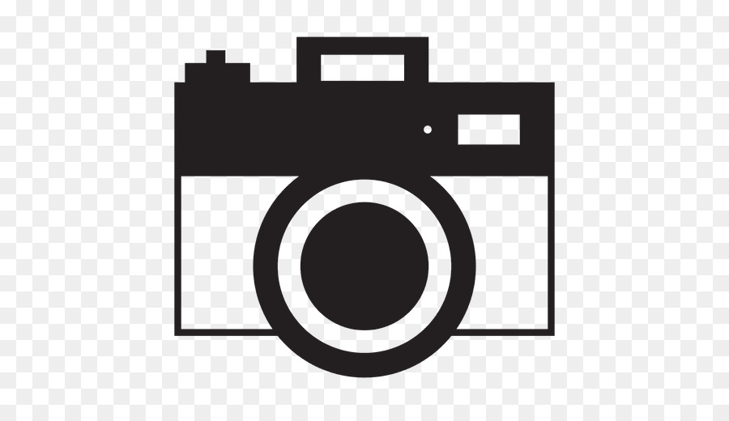
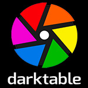

DevOps
The Web
Categorie
Multimedia
Profiel Content Creator
tooling Foto organize & edit
 Foto tooling heeft tweeledige functie namelijk organiseren op computer van digitale foto’s zodat in groot archief ‘eenvoudig’ bepaalde files opgezocht kunnen worden, en bewerken van foto’s voor bijvoorbeeld verbetering van belichting of knippen en plakken. Beiden zijn gericht op "bulk" verwerking, dit versus Gimp en Photoshop die meer gericht zijn naar één foto. Foto tooling is ook gericht op organiseren van foto's.
Foto Organize
→ Reeks miniatuurvoorbeelden op enkel scherm bekijken en op een pagina afdrukken, contact sheets→ Afbeeldingen kunnen in albums worden georganiseerd
→ Albums kunnen in collecties worden georganiseerd
→ Tags toevoegen (ook wel sleutelwoorden, categorieën, labels of vlaggen genoemd)
→ Industriestandaard IPTC- of XMP-headers in elk afbeeldingsbestand of in zijspanbestanden
→ Verkleinen, exporteren, e-mailen en afdrukken
→ zie: Wikipedia Image Organizer
Foto Edit
→ Selectie van lagen, grootte wijzigen, afbeelding bijsnijden, deel van afbeelding uit achtergrond knippen→ Histogram, ruisonderdrukking, verwijderen van ongewenste elementen, selectieve kleurverandering
→ Beeldoriëntatie, perspectiefcontrole en vervorming, lenscorrectie, beelden verbeteren
→ Afbeeldingen verscherpen en verzachten, afbeeldingen selecteren en samenvoegen
→ Afbeeldingen snijden, speciale effecten
→ Stamp Clone Tool, verander kleurdiepte, Contrastverandering en verheldering
→ Gammacorrectie, lleuraanpassingen, dynamische overvloeiing, afdrukken, vervormen
→ zie: Wikipedia Image Editor
- Tooling voor Foto organize & edit
-
Alternatieve niét FOSS tooling is Adobe Lightroom geschikt voor Windows en macOS (betaald), Affinity Photo geschikt voor Windows, macOS en iPad (betaald), ON1 Photo RAW 2019 geschikt voor Windows en macOS (betaald), Luminar geschikt voor Windows en macOS (betaald), Capture One Pro geschikt voor Windows en macOS (betaald), DxO PhotoLab geschikt voor Windows enmacOS (betaald), Alien Skin Exposure X4 geschikt voor Windows en macOS (betaald), Corel Aftershot Pro geschikt voor Windows, macOS en Linux (betaald), ACDSEE PhotoStudio 2019 geschikt voor Windows (betaald), PhotoDirector 10 geschikt voor Windows (betaald). Wél FOSS is:
- DarkTable
-
 Darktable is een free en OpenSource fotografie workflow applicatie en RAW ontwikkelaar. In plaats van een grafische rastereditor zoals Adobe Photoshop of GIMP te zijn, omvat het een subset van beeldbewerkingsbewerkingen die specifiek zijn gericht op niet-destructieve post-productie van onbewerkte foto's.
Het is vooral gericht op het verbeteren van de workflow van een fotograaf door het verwerken van grote aantallen afbeeldingen te vergemakkelijken. Het is gratis beschikbaar in versies voor meeste Linux distributies, macOS, Solaris en Windows.
→ zie: Wikipedia DarkTable
→ zie: Website DarkTable tbv download - Kenmerken
-
→ Maskers
→ Kleur
→ Importeren en exporteren
→ Scripting
→ Multi-mode histogram
→ Gebruikersinterface, lichttafel. Donkere kamer, tethering, kaart
→ Plug-ins, Basisgroep, Toongroep, Kleurgroep, Correctiegroep, Effectgroep